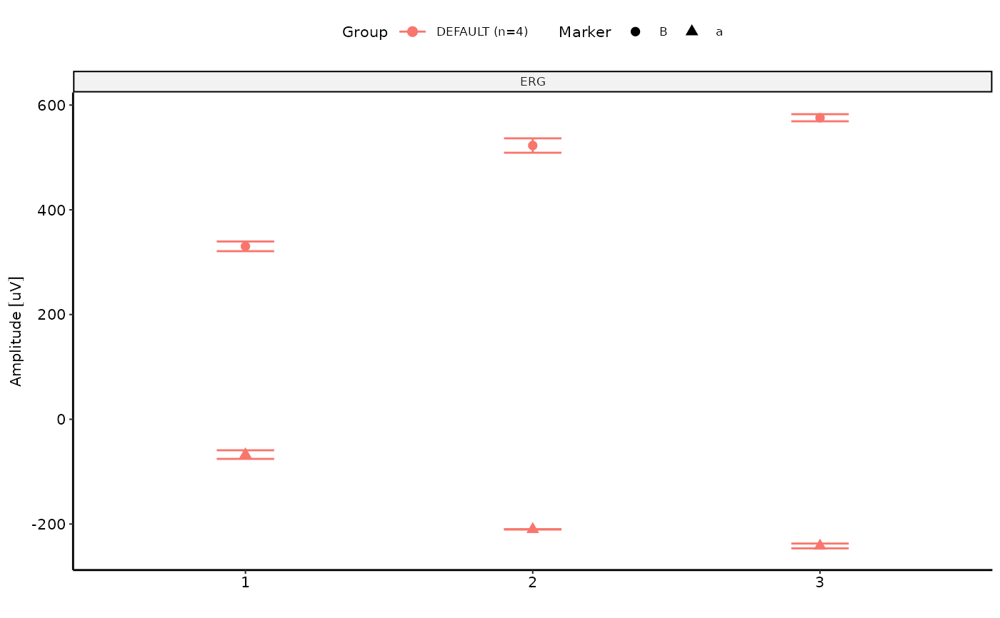

ggStepSequence.RdThis function generates a ggplot2:ggplot plot of step sequence (i.e. sequential recordings within a single protocol) data for multiple ERG exams.
A list of ERG exams.
A base::list defining selection criteria. Tags/Keys in the names in the list must represent valid column names of Metadata orStimulusTable.
Vector of markers to include in the plot (e.g. c("a","B)).
Wrapping parameter for facetting ("Channel" or NULL).
A ggplot2:ggplot plot object.
# Example usage:
data(ERG)
ERG<-SetStandardFunctions(ERG)
ERG <- AutoPlaceMarkers(ERG)
#> ================================================================================
data <- list(ERG, ERG)
ggStepSequence(data, where = list(Background = "DA", Type = "Flash", Channel = "ERG"), Markers = c("a", "B"))
#> ================================================================================
